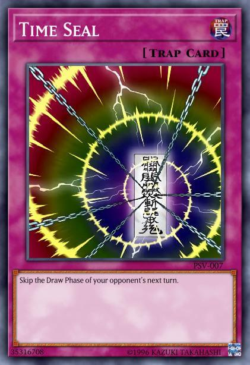
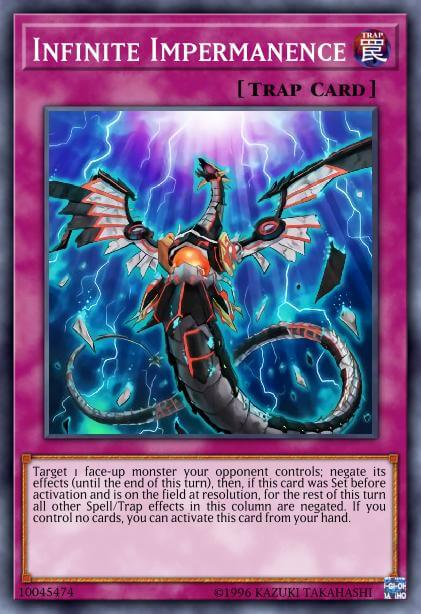
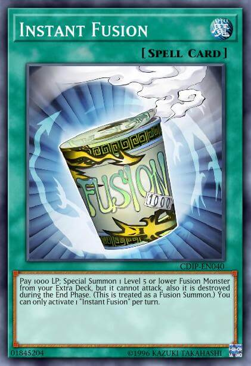

So you want to learn about the basics?
Well there is a lot to learn. Yu-Gi-Oh! is known for being one of the more involved card games out there but in starting from the bottom I know we can get to a general understanding together!
The Field and The Cards

Let's start with where we play the game, the Field, and what we play it with, the Cards. As you can see in the labled image above, there are many zones on the field for cards to go but
not all cards can go in all zones. Use the selector below to learn about any zone and the cards that can occupy them that you want!
The General Rules
The most common way to win in Yu-Gi-oh! is to cause your opponent to lose all of their life points, generally through attacks with your monsters. Life points start at 8000. A duel is just a collection of player's turns and a turn is broken up into 6 phases. The Draw Phase, the Standby phase, the Main Phase 1, the Battle Phase, the Main Phase 2, and the End phase in that order. Monsters can be summoned and all cards can be set in the Main Phases, monsters can attack during the Battle phase, and Spells and Traps can activate at any phase depending on their type.
The Golden Rule
After all we've learned so far, there is one thing to remember; although I've been calling these all rules and speaking in absolutes, they are really more like guidlines. Aside from the starting life points being 8000, each player starting with 5 cards in hand, and the first player drawing a card at the start of the duel, everything else can be changed.
Players always draw in the draw phase? Nope, not if their oponent activated Time Seal. 
Trap Cards have to be set for a turn to be activated? Nope, not if its Infinite Impermenance and you control no other cards. 
Fusion monsters require their fusion materials and polymerization? Nope, not if you use Instant Fusion. 